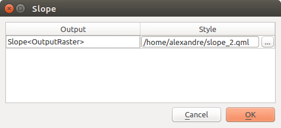

重要
翻訳は あなたが参加できる コミュニティの取り組みです。このページは現在 100.00% 翻訳されています。
27.2. プロセシングフレームワークを設定する
プロセシングオプションメニュー （  プロセシング タブ）では、アルゴリズムの動作について設定することができます。設定パラメータは、ダイアログの左側で選択できる個別のブロックに構成されています。
プロセシング タブ）では、アルゴリズムの動作について設定することができます。設定パラメータは、ダイアログの左側で選択できる個別のブロックに構成されています。
27.2.1. 一般情報
一般情報 ブロックには、アルゴリズムダイアログや入力・出力パラメータの動作を制御するためのデフォルト設定が含まれています。しかし、いくつかの設定はアルゴリズムレベル、アルゴリズム実行時 または 個々のパラメータ ごとに上書きすることができます。
デフォルトのラスタレイヤ拡張子 はデフォルトで
tifデフォルトのベクタレイヤ拡張子 はデフォルトで
gpkgアルゴリズムを実行するときの 無効地物フィルタ:
フィルタリングしない（パフォーマンスを向上させる）：すべての地物（有効と無効なジオメトリを含む）を処理するが、ジオメトリの無効が演算に与える影響により、結果が誤っている場合がある
不正なジオメトリの地物を無視、 つまり、データセットの一部（有効なジオメトリの地物）のみが処理されることを意味する
ジオメトリが無効な場合にアルゴリズムの実効を停止する: アルゴリズムでレイヤ全体を処理したい場合は無効なジオメトリを追跡して修正する必要があります。有効性チェック や ジオメトリを修復 のようなアルゴリズムが、これを実現するのに役立ちます。
無効地物フィルタ の設定は、アルゴリズムの実行時に入力ごとに上書きすることができます。
アルゴリズムの実行時にダイアログを開いたままにする。アルゴリズムの実行が終了し、その出力レイヤがQGISプロジェクトに読み込まれると、アルゴリズムダイアログは閉じられます。このダイアログを開いたままにしたい場合（異なるパラメータでアルゴリズムを再実行したり、ログタブに書き込まれる出力をよりよく確認するため）、このオプションをチェックします。
最大スレッド数
一時的ではない出力のための 出力フォルダ: プロセシング実行時の出力にフォルダパスが与えられていない場合、このフォルダに保存されます。デフォルトは、アクティブな user profile ディレクトリ下の
processing/outputsです。一時出力先パスの上書き: 一時的な出力は、デフォルトではマシンの
tmpフォルダーに保存されます。このオプションを使用すると、別の保存場所を設定することができます。事前実行スクリプト と 事後実行スクリプト。これらのパラメータは、スクリプトとコンソールのセクションで説明した、プロセシングスクリプト機能を使って書かれたスクリプトを含むファイルを指します。
レイヤ名にファイル名を優先使用する。アルゴリズムによって作成される各結果レイヤの名前は、そのアルゴリズム自体によって定義されます。ある場合には、どの入力レイヤを使用しても同じ出力名が使用されることを意味する、固定名が使用されるかもしれません。他の場合、名前は入力レイヤの名前やアルゴリズムの実行に使われるパラメーターの一部に依存するかもしれません。このチェックボックスをオンにすると、代わりに出力ファイル名から名前が取られます。出力が一時ファイルに保存される場合、この一時ファイルのファイル名は通常、他の既存のファイル名との衝突を避けるための長くて無意味なものであることに注意してください。
結果グループ名。すべてのプロセシング結果レイヤを レイヤ パネルでグループ化して取得したい場合、このパラメータにグループ名を設定します。グループは既に存在していてもいなくてもかまいません。QGISはすべての出力レイヤをこのようなグループに追加します。デフォルトでは、このパラメータは空なので、すべての出力レイヤは、アルゴリズムを実行するときにアクティブになる項目によって、レイヤ パネル内の異なる場所に追加されます。なお、出力レイヤが レイヤ パネルに読み込まれるのは、アルゴリズムダイアログで アルゴリズムの終了後に出力ファイルを開く がチェックされている場合のみです。
既知の問題があるアルゴリズムを表示: デフォルトでは、QGISは壊れたアルゴリズム（一般的にサードパーティプロバイダのもの）の表示を避けています。チェックした場合、それらはプロセシングツールボックスで利用可能になり、警告アイコンと問題があることを説明するツールチップを表示します。ご自身の責任においてご利用ください。
出力レイヤの地物数を表示。データ形式によっては地物数の計算に時間がかかることがあるため、このオプションはデフォルトでオフになっています。
選択ボックス内にレイヤCRS定義を表示
無効のプロバイダがある場合にツールチップを表示
線レイヤのスタイル、 点レイヤのスタイル、 ポリゴンレイヤのスタイル、 ラスタレイヤのスタイル は、出力レイヤ（つまり、プロセシングアルゴリズムが生成するレイヤ）に対するデフォルトのレンダリングスタイルを設定するためのものです。QGISを使って必要なスタイルを作成し、それをファイルに保存し、設定にそのファイルへのパスを入力してアルゴリズムがそれを使用できるようにします。プロセシングによってレイヤが読み込まれ、QGISキャンバスに追加されるたびに、そのスタイルでレンダリングされます。
レンダリングスタイルは、各アルゴリズムとその出力のそれぞれに対して個別に設定できます。ツールボックスでアルゴリズムの名前を右クリックして 出力のためのレンダリングスタイルを編集 を選択するだけです。次の図のようなダイアログが表示されます。
 図 27.5 レンダリングスタイル
それぞれの出力に設定したいスタイルファイル (
.qml) を選択して OK を押して下さい。パラメータのCRSが合致しない場合は実行前に警告をする：デフォルトでは、QGISネイティブアルゴリズム（
 グループにリストされているもの）は、実行前に入力レイヤを最初のレイヤのCRSに透過的に再投影します。このオプションをチェックすると、再投影をサポートしていない他のツールから、入力CRSが同一でない場合に通知を受け取ることができます。サードパーティプロバイダは関係ありません。
グループにリストされているもの）は、実行前に入力レイヤを最初のレイヤのCRSに透過的に再投影します。このオプションをチェックすると、再投影をサポートしていない他のツールから、入力CRSが同一でない場合に通知を受け取ることができます。サードパーティプロバイダは関係ありません。
27.2.2. メニュー
メニュー ブロックは、アルゴリズム、スクリプト、モデル（組み込みまたはプラグインによって提供される）を、専用のメニューまたはツールバー（プロセシングツールボックスと共に）で利用できるようにするかどうかを制御します。各プロバイダの各項目について次ができます:
Add button in toolbar は、 プロセシングアルゴリズム ツールバーで利用できるようにします
そのアルゴリズムに Icon を割り当てる
Menu path を設定する: このアルゴリズムは、既存のメニューまたはカスタムメニューから利用できるようになります（例:
Vect&or/MyTopAlgorithms）
設定を適用するためにQGISを再起動してください。変更した内容は、いつでも デフォルトにリセットする ことができます。
27.2.3. モデルとスクリプト
 モデル と
モデル と  スクリプト ブロックでは、それぞれモデルやスクリプトを保存し、探すためのデフォルトフォルダを設定することができます。
スクリプト ブロックでは、それぞれモデルやスクリプトを保存し、探すためのデフォルトフォルダを設定することができます。
27.2.4. プロバイダ
また、アルゴリズム プロバイダ のブロックもあります。ここは、インストールされたプロバイダが設定を公開する場所です。例えば、組み込みプロバイダには 有効化 という項目があり、そのアルゴリズムをツールボックスに表示するかしないかを設定することができます。いくつかのアルゴリズムプロバイダには独自の設定項目があり、特定のアルゴリズムプロバイダを取り上げる際に説明されます。